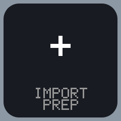
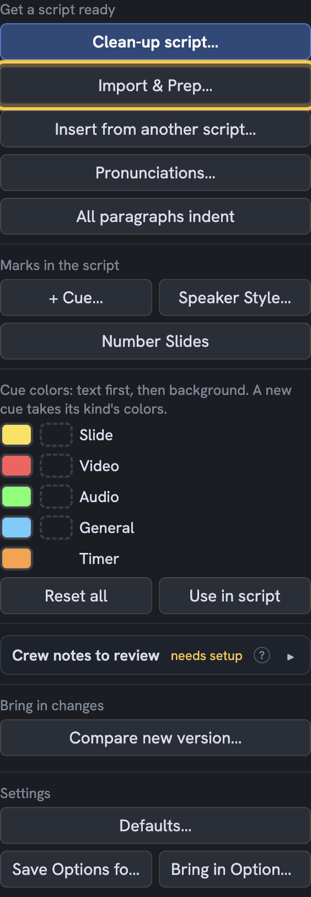
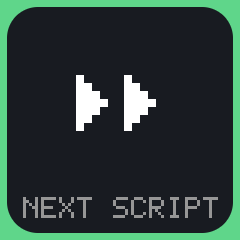
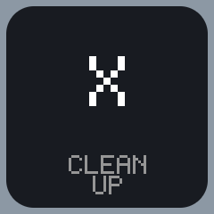
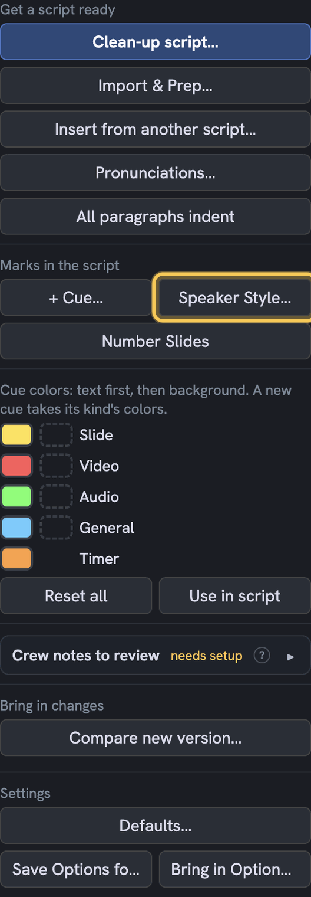
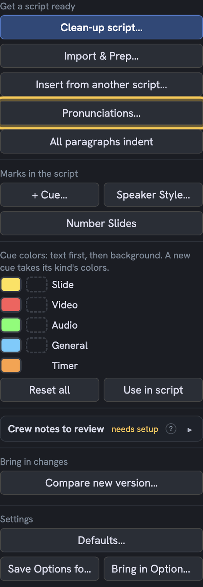
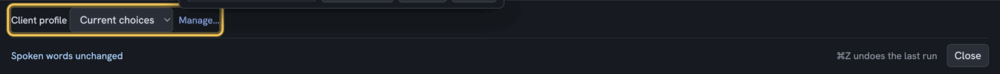
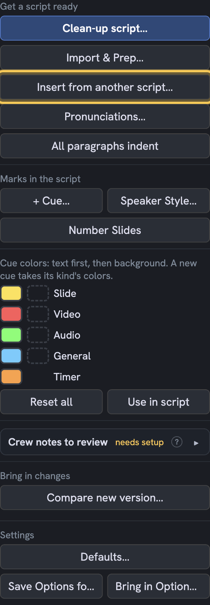
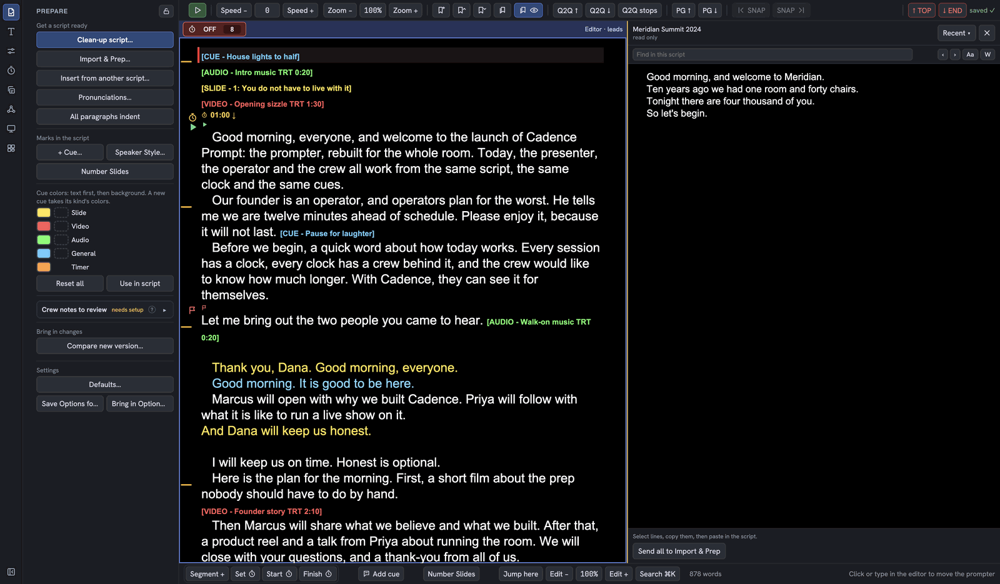
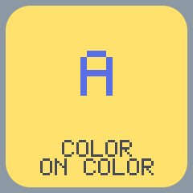

Get a raw script show-ready in a fraction of the time. Import, clean up, style speakers, add pronunciations, handle late rewrites, and mark up your text. These are the exact scripts you'll read on the prompter inside the app, laid out here as a reference page. Inside Cadence, just hit Play, read along, and pause at each Your turn to try it live. Practice is always optional.
This series is about the part that quietly eats your whole day: the prep.
Let’s be honest—more than half of prep is just formatting. And you don’t have to live with that anymore.
Every module here is built around tools you can try right as you read.
Whenever you see YOUR TURN, go ahead and pause to test it out.
Why this matters
A raw script showing up in your inbox is usually a mess. Speaker names, stage directions, production notes, and cues are all crammed together— and none of it was written with a presenter’s eyes in mind.
Then the client sends over a new version, and you get to do the whole thing all over again.
Meanwhile, the crew is waiting, and the producer is watching the clock—and the overtime.
Cadence was built by an operator to hand that time right back to you: import it, clean it up, mark it up, and keep every single change straight.
Import & Prep
To bring a script in, press this key on your Stream Deck:

or click Import & Prep in the Prepare drawer.

Import & Prep opens each file in the Prepare tab, next to your script (Option-click gives it a window of its own), so nothing in the script you currently have open gets touched.
No Stream Deck? Just hit the Import & Prep… button.
It reads Word documents, PowerPoint and Keynote speaker notes, PDFs, Pages files, and Telescript files.
It can even pull straight from a Google, Dropbox, OneDrive, or Box link.
For a cloud link, just choose From link… paste it in, and your script drops right into place.
Your turn Open Import & Prep and look at what it offers. Then close it without bringing anything in
It asks once
Almost every file arrives with baggage you’d rather leave behind— tracked changes, tables, stray highlights, and embedded pictures.
Import & Prep asks how you want to handle each one— just once— and then remembers your choices.
No more hunting through every new script for exactly the same headaches.
Word’s colors are never the colors you actually want on glass. Here, you decide once and move on.
Presentation decks come right in with their speaker notes, and every slide automatically gets its own Slide cue.
You even get dedicated controls for slides without notes, Slide cue markers, and whether to pull in the slide images too.
SLIDE - 1
SLIDE - 2
Pulling notes out of a PowerPoint with one click will make no one happier than the Graphics Operator.
Put it where you want it
You can stitch multiple scripts together into one master script, or send them straight into a runlist— and nothing opens until you say so.
Best of all, everything you import is a fresh working copy. The original file never gets touched.
Good habit to live by: never edit the client’s original. Always work from your own copy.
Your turn Bring in one of your own scripts, a Word file or a deck with notes
When you’re ready, press

for the next module.Module 2
Clean-up in six steps
About 4-5 minutes
The pain
You know the old way of doing this— find and replace in Word: a period followed by two line breaks— right up until it hits “Mr.” or “Mrs.” and chops a line straight in half.
Clean-up actually understands where a sentence ends, and it shows you everything it found before it changes a single character.
The six steps
To kick it off, press this key on your deck:

or click Clean-up script in the Prepare drawer. It opens as a tab beside your script.
No Stream Deck? Just click the Clean-up script button.
The six steps run in order, and every single one previews its findings before touching your text.
pulls out everything that isn’t meant for the presenter to see— production lines, internal notes, and comment tags— while keeping a safe copy of everything it sets aside.
handles your spacing: closing up double spaces, putting every sentence on its own line, and tightening up the page.
breaks lines right where a presenter naturally takes a breath— after a colon, a semicolon, an ellipsis, or inside a list.
Every break rule is a simple switch you can toggle on or off.
detects who's speaking, and if you want it to, it gives each name its own distinct look.
colors your stage directions so they stand clearly apart from the words meant to be spoken.
And turns plain-text lines like “SLIDE 6:” or “Opening 3 min video” into real, working cues that look like this:
SLIDE - 6
VIDEO - Opening Video TRT 03:00
How it asks
Walk me through it takes you through one decision at a time, right alongside the line from your script. Show everything at once gives you the bird’s-eye view, with a checkbox for every finding.
Cadence never guesses on your behalf when it isn’t sure.
And the entire six-step pass is wrapped in one single undo— tap this key, and your script goes right back:
Try it on this mess
Take a look at the messy script right below. It’s got production notes, a stage direction, double spaces, and a cue typed out in plain text. Hit Clean-up and walk right through it.
Mr. Alvarez will open. Then Dr. Chen will speak. Please be seated. NOTE TO PRODUCER: cut this if we are over time SLIDE 3: Opening film 2 min ANNOUNCER: Ladies and gentlemen, please welcome Dana Reyes. DANA: (walks to the podium) Good morning, everyone; thank you for coming to the launch.
Your turn Press Clean-up on the mess above, walk through it, then press Undo. Then do it on one of yours
What it saves
Speakers, stage directions, cues, and spacing— all handled in one pass. A script that used to eat up an hour by hand, done in a fraction of the time— and always one undo away.
Feeling over-prepared is a great place to be— and this is how you get there.
When you’re ready, press for the next module.
Module 3
Speakers and styles
About 3-4 minutes
Who is speaking
Picture two presenters, a host, and an announcer sharing the same script. In a raw document, they all blur together into one flat wall of text.
A style is simply a saved look for a speaker—a name, a color, a font size, and a spot on the page. Give each speaker their own look, and talent can spot their lines in a split second.
A presenter who finds their place effortlessly sounds like they aren’t reading at all.
The Styles sheet
Hit the Speaker Style… button in the Prepare drawer to manage every speaker in one place. It opens as a tab beside your script. You can also press this key on your Stream Deck:

From here, you can dial in each speaker’s name, color, size, alignment, and line spacing.
Alignment and spacing can be set for a single speaker, a highlighted selection, or the entire script— and the hierarchy is simple: a line’s own setting wins first, then its speaker’s style, then the script’s default.
Your turn Open Speaker Style…, change one color, then close it
Let Cadence find them
And you don’t have to build them all by hand.
The Speakers step of Clean-up scans the speaker names at the start of each line, lists what it finds, and lets you approve them.
From that moment on, those colors follow that speaker everywhere they appear.
Teach Cadence once, then reuse it on the very next script.
A look for stage directions
Stage directions aren’t words meant to be spoken out loud. The Stage directions step colors them so they stand cleanly apart— the presenter sees the direction without accidentally reading it, and the crew sees it and knows exactly what’s coming.
When you’re ready, press for the next module.
Module 4
Say it right
About 4-5 minutes
The name
Every show has at least one word the presenter is going to stumble over— or freeze mid-sentence trying to figure out.
Ask how it’s pronounced ahead of time, and drop it right where their eyes will land.
Highlight the tricky word, press this key:
and the Pronunciations tab opens beside your script, with a respelling already suggested for most everyday words.

No Stream Deck? Choose Prepare, then Pronunciations….
Let’s try one right now.
The next line has a name that trips people up all the time.
Select Siobhan and hit Pronounce.
Siobhan is on Cadence’s starter list, so the respelling is already filled in— just accept it.
Please welcome Siobhan Fitzgerald.
Your turn Select Siobhan in the line above, press Pronounce, and accept the respelling
Names are different.
If a name isn’t on the starter list or in the dictionary, the box opens empty— Cadence has no suggestion.
It won’t guess a name, because a wrong guess on stage is worse than none.
So ask the person who owns it, then type exactly what they tell you.
Select the name, open Pronunciations, type the pronunciation, and save it to your list for the next time it comes up.
Your turn Pretend the client just told you this name is said OR-en-kohl. Select Orencole, press Pronounce, and type it in
Here’s the name to practice on:
Orencole
Now select it again: Cadence remembered the respelling, so it’s already filled in.
Orencole
Why it works
A presenter who trusts the prompter relaxes—
and a relaxed presenter sounds like a real human being.
For a word Cadence knows, a respelling takes a couple of clicks.
For a name, it takes as long as it takes to find out how it’s really said.
Mispronouncing a word or someone’s name in front of a packed room lasts forever.
When you’re ready, press for the next module.
Module 5
Every client
About 2-3 minutes
The same client again
Some clients send you scripts show after show— and every single time, you end up making exactly the same formatting choices.
A client profile remembers how you cleaned up that client’s scripts, so the next time they send one over, Clean-up starts right from those exact settings.
Teach it once, and let Cadence remember the rest.
Making one
Open Clean-up.

Look for the Client profile box at the bottom of the Clean-up page.
Run Clean-up exactly the way that client likes their scripts formatted, then open Manage…, type their name into New profile name and hit Save as new.
Next show, just pick their name from Client profile, and every step starts pre-loaded with their preferences.
A profile saves everything: which steps run, your line and breath-break rules, stage direction and production keywords, cue types, and the exact colors you assigned to each speaker.
Your turn Open Clean-up and find the Client profile box. Then close it
Open Clean-up with the Clean-up script button in the Prepare drawer.
Why it matters to the client
The client never even sees this behind the scenes.
All they see is their script looking sharp and familiar, every single time— and the crew sees exactly the same color coding from one event to the next.
That consistency is exactly what a producer remembers when they’re booking their next show.
When you’re ready, press for the next module.
Module 6
The late rewrite
About 2-3 minutes
The worst hour
It’s late, doors are around the corner, and the client drops a brand-new version of the entire script.
The old way meant starting over from scratch— because we’ve all been burned by Word’s Track Changes enough times to know it feels safer to just re-import the whole thing.
And that’s exactly how a producer ends up paying an entire crew to sit around waiting.
Bring in a new version
Instead, go to File, click Bring in a New Version… and select the new file.
Cadence lays it all out side by side: what the client changed, what you changed, and where you both edited the same line.
Nothing gets overwritten silently, and your prep work stays intact.
Accuracy always comes before speed— a late rewrite is only fast if it’s right.
Your turn Bring in a changed copy of one of yours, and look at what it shows you
Every version is kept
Every single version of your script is automatically preserved. Head to File, then Versions… and you can roll back to any earlier draft in seconds.
Nothing gets lost, and nobody has to guess.
Show that feature to your producer— they’re going to love it.
When you’re ready, press for the next module.
Module 7
Insert from another script
About 5-6 minutes
Borrow a line
Say you nailed the perfect intro last month—and now you need exactly those lines in a brand-new script.
The old way meant digging up the old file, hunting for the right paragraph, copying it, switching windows, pasting it in, and crossing your fingers that the formatting survived.
Insert from another script opens that old script right beside the one you’re working on, so you can pull lines straight across without ever leaving your seat.
Best of all, your cues and speaker styles come right along for the ride— nothing to rebuild.
Open the viewer
To open it, click Insert from another script… inside the Prepare drawer.

You can pick any Cadence script— or any file Import & Prep knows how to read: Word docs, PowerPoint and Keynote, PDFs, Pages, and Telescript.
The script opens in a clean side-by-side viewer that temporarily covers the right-hand column of your operator window— your preview, timer, and Coming up.

Meanwhile, your active script stays right where it belongs in the editor.
The viewer is strictly read-only— you can scroll, read, and select freely, without any risk of accidentally changing a word in the old file.
Your turn Click Insert from another script…, choose any script, and look around. Then close it with the ✕ or the Esc key
Copy and paste
Highlight the lines you want in the viewer and copy them just like you always do— then click into your own script and hit paste.
Every cue comes straight across with the text, and your speaker styles come with it too.
Your turn Copy a few lines from the viewer, paste them into a script of yours, then undo
Slide numbers
If the slides you paste don’t follow the slide above, Cadence asks what to do about the numbers: Keep them, Start at 1, or Continue from the slide above.
It only asks when the numbers don’t line up, and only for lines you copied from the viewer.
Slides 8 and 9 dropping in right after slide 3 is the very moment you want to be asked.
And of course, you can always hit Number Slides later to square everything away in one click.
While the prompter plays
Keep in mind, the viewer is strictly for prep— not for a live show.
It won’t open while the prompter is actively playing, and if it’s still open when you hit Play, it automatically tucks itself away.
The viewer only ever lives inside your operator window— your presenter never sees a trace of it.
Mirrored or Extended
On a Mirrored setup, the prompter picture simply scales down to make room beside the viewer.
Switching to Prompt view, hitting Play, or clicking the ✕ closes the viewer and drops your cursor right back into your script.
Extended mode gives you the most breathing room, since your prompter already has a screen of its own.
The whole file
Need the entire script instead of just a few lines?
Send it straight to Import & Prep right from the viewer, and clean it up there first.
When you’re ready, press for the next module.
Module 8
Pictures
About 2-3 minutes
A picture in the script
Drop a picture into your script, and it scrolls right along with the words. Paste it, drag it straight in, or go to Insert, then Pictures….
A small image sits right inline—matched to the height of the text, just like an emoji:
Give it its own line, and you can scale it as big as you need.
Your scroll stays butter-smooth, because Cadence measures every image before it ever draws a frame.
Mirror and Flip turn pictures right alongside your text, while Invert leaves the image colors untouched.
Export to plain text and it leaves a clean note where the picture sat; export to Word or PDF and it carries the image in its own dedicated column.
Your turn Drop a picture of yours onto the line after this one, then drag the handle in its corner to make it bigger
A picture for each cue
Plenty of shows have a slide thumbnail for every single cue. Go to Insert, then Slide pictures from a folder…, and Cadence drops each slide image right next to its matching cue like this:
SLIDE - 1
SLIDE - 2
Importing a presentation deck can do this automatically too— the import sheet simply asks if you want to bring the slide pictures along.
Ask the Graphics Operator for a slide deck with notes, and then be prepared to make their day. No one will be happier about this feature than them.
When you’re ready, press for the next module.
Module 9
Highlight and Invert selection
About 2-3 minutes
One click
The very first thing I fixed for myself when building Cadence was color.
In the old software, coloring text took five separate clicks.
Now, just select your words and click any color under Background in the Text drawer.
That highlight appears live on the prompter too, so the presenter sees the exact emphasis you marked.
Want an even faster way to change text color, highlight, or both with a single tap? Drop a text and background button

right onto your Stream Deck.
You can also Invert the color of selected text with the Invert selection button, the button on a Stream Deck.
Invert flips the words to black on white, and pressing it again puts them right back.
And Clear highlight strips the background color clean.
The Invert key works on whatever words you’ve selected— and with nothing selected, it flips the entire display.
This next line is for practice— the presenter must never say it out loud.
Your turn Highlight the line above, invert it, then clear it
And that’s Prep Like a Pro.
Up next is The Whole Room— it’s about everyone else: the crew, the cue sheet, the clock, and the phone in the producer’s hand.
 pulls out everything that isn’t meant for the presenter to see—
pulls out everything that isn’t meant for the presenter to see—